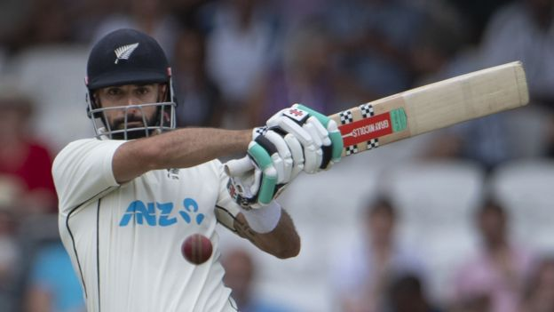

News
Major blow to Johnson as Tories lose two by-elections
The Lib Dems make history by overturning a 24,000 Tory majority to win in Tiverton and Honiton, while Labour reclaim Wakefield, but Boris Johnson vows to continue as PM.
Lawyers threatened to quit over Trump election pressure
The Capitol riot panel hears of an explosive showdown between Trump and justice department lawyers.
Bodies of Phillips and Pereira returned to families
The men were killed in Brazil's Amazon earlier this month while returning from an expedition.
UK Politics
US & Canada
Latin America & Caribbean
Sport

New Zealand resume on 225-5 - clips, radio & text
New Zealand resume on 225-5 on the second day of the third and final Test against England at Headingley.
Transfer latest as Arsenal 'close in on' Man City's Jesus
Arsenal chasing Manchester City forward Gabriel Jesus, Barcelona make £34m Robert Lewandowski bid, Paul Pogba on the brink of joining Juventus, plus more.
Raducanu faces Van Uytvanck in Wimbledon opener
British number one Emma Raducanu is drawn against Belgium's Alison van Uytvanck in the Wimbledon first round.
Cricket
Football
Tennis